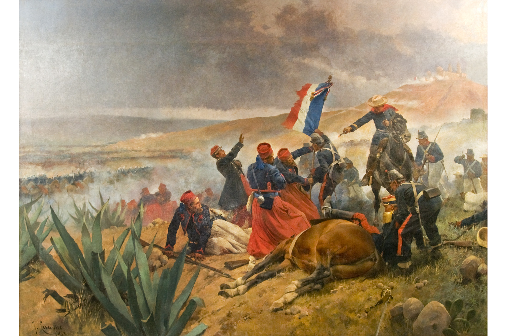

Batalla del 5 de Mayo
Antecedentes
Después de los excesos de la dictadura santannista y las batallas de la guerra de Reforma, México se encontraba en bancarrota sin poder saldar sus deudas con los países acreedores.
En 1862 las armadas de España, Inglaterra y Francia desembarcaron en Veracruz dispuestas a cobrar sus préstamos. Después de negociar con el representante de México, España e Inglaterra se retiraron.
Napoleón III, Emperador del Segundo Imperio Francés quería establecer una monarquía favorable para Francia, y asimismo, quería disolver el Gobierno Constitucional Mexicano.
Beligerantes
|
México |
Francia |
| Ignacio Zaragoza Porfirio Díaz Miguel Negrete |
Charles Ferdinand Latrille, conde de Lorencez |
| 4700 soldados, la mayor parte de ellos veteranos de la Guerra de Reforma
Regimiento de cazadores de África Batallón de Veracruz, Guardia Nacional de Puebla, Escaramuzadores de Morelos, Entre muchos otros estados. Entre 100 y 300 milicianos y civiles armados |
6048 soldados, entre Infantería Naval, 99° Regimiento de Línea, 2º Regimiento de Zuavos, Cazadores de África y de Vincennes. |
| 83 muertos, 131 heridos y 12 desaparecidos | 476 muertos, 345 heridos |
4 de Mayo

La Batalla de Atlixco tuvo lugar el 4 de mayo de 1862 en las inmediaciones de la Hacienda de las Traperas en Atlixco en el estado de Puebla, México, entre elementos del ejército mexicano de la república, al mando de los generales Antonio Carvajal y Tomás O'Horan contra las tropas al servicio del Segundo Imperio Mexicano comandadas por el general José María Cobos y de Leonardo Márquez, compuesta de soldados conservadores mexicanos en apoyo de envío de refuerzos para llevar a cabo la Batalla de Puebla, durante la Segunda Intervención Francesa en México.
Esta batalla culminó con una victoria republicana que fue decisiva para la victoria en Puebla al dia siguiente
5 de Mayo 🔫

Desarrollo de la contienda
9:15 AM - 05/05/1862: Los franceses aparecieron en el horizonte, avanzando desde la cercana Hacienda de Rementería
11:15 AM - 05/05/1862: La batalla se inicia, anunciándose con un cañonazo desde el Fuerte de Guadalupe y acompañado por los repiques de las campanas de la ciudad.
11:30 AM - 05/05/1862: Una maniobra sorpresiva de la columna francesa, que venía avanzando en orden de oriente a poniente, se dividió en dos: la primera, compuesta por aproximadamente 4000 hombres y protegida con su artillería, dio un violento viraje hacia la derecha y se dirigió hacia los fuertes.
11:45 AM - 05/05/1862: Zaragoza en respuesta a la maniobra, replanteó su plan de batalla, movilizando las tropas hacia las faldas del cerro. El 6o. Batallón de la Guardia Nacional del Estado de Puebla, fue el primer cuerpo del Ejército de Oriente en hacer frente a los franceses, al ubicarse en la línea comprendida entre los fuertes, y rechazar su ataque.
12:00 PM - 05/05/1862: Zaragoza hizo avanzar a las fuerzas de Berriozábal a paso veloz entre las rocas, situándolas entre la hondonada que separa a Loreto y Guadalupe. Mientras, el general Antonio Álvarez con su brigada protegió el flanco izquierdo de los reductos.
12:30 PM - 05/05/1862: Zaragoza hizo avanzar a las fuerzas de Berriozábal a paso veloz entre las rocas, situándolas entre la hondonada que separa a Loreto y Guadalupe. Mientras, el general Antonio Álvarez con su brigada protegió el flanco izquierdo de los reductos.
12:45 PM - 05/05/1862: Zaragoza dispuso que el general Lamadrid defendiera con las tropas potosinas y dos piezas de artillería el camino que conectaba a la ciudad con la garita de Amozoc. La derecha de la línea de batalla mexicana la cerró Porfirio Díaz con la División de Oaxaca, auxiliado por los escuadrones de Lanceros de Toluca y Oaxaca.
13:00 PM - 05/05/1862: Los zuavos, el regimiento de élite de la infantería francesa, iniciaron su ascenso por el cerro hacia Guadalupe, perdiéndose de la vista de los fusileros mexicanos. De repente, aparecieron disparando frente a la fortificación. Sin embargo, el fuego lanzado por los mexicanos los detuvo en seco. En ese instante, los soldados de Berriozábal los recibieron con sus bayonetas, por lo que tuvieron que retirarse en buen orden hasta ponerse fuera de tiro. Se repusieron rápidamente y se lanzaron de nuevo intentando tomar el fuerte.
14:30 PM - 05/05/1862: Lorencez se dispuso a lanzar el último asalto, dirigiendo a los Cazadores de Vincennes y el Regimiento de Zuavos hacia Guadalupe, mientras ponía en marcha una segunda columna de ataque compuesta de los restos de los cuerpos de batalla —excepto el 99 de Línea, el cuál quedó de reserva en el campamento francés—, para atacar por la derecha de la línea de batalla mexicana.
16:30 PM - 05/05/1862: Porfirio Díaz acudió en auxilio de los Rifleros de San Luis Potosí, que estaban a punto de ser rodeados. Movió en columna al Batallón Guerrero, a las órdenes del coronel Jiménez, y le ganó el terreno a los franceses. Para apoyar envió al resto de las tropas de Oaxaca, con los coroneles Espinoza y Loaeza a la cabeza, con lo que se logró expulsar al enemigo de las cercanías.
17:30 PM - 05/05/1862: Los efectivos franceses empezaron a huir, completamente dispersados. Se replegaron a la hacienda Los Álamos, para finalmente retirarse hacia Amozoc.
Consecuencias

El saldo final de la batalla fue de 476 muertos y 345 heridos del lado francés, así como 83 muertos, cerca de 131 heridos y 12 desaparecidos para el Ejército de Oriente. A las 7 de la noche del día 6 de mayo arribaron a Puebla el general Antillón y sus tropas; Zaragoza esperaba un nuevo ataque de Lorencez, pero éste, el día 8 de mayo, dispuso la retirada hasta San Agustín del Palmar, siendo "saludado" por la artillería republicana y la Banda de Guerra de los Carabineros, quienes tocaron "Escape".
Cabe atribuir parte de la responsabilidad en el resultado de la batalla a Lorencez, por decidir lanzarse en primer lugar contra Loreto y Guadalupe en lugar de ir sobre la ciudad. Esta acción no carece de sentido si se toma en cuenta que el general francés se encontraba confiado en la victoria por lo que había sucedido en las Cumbres, además de que bajo la lógica militar de su tiempo, primero había que atacar al enemigo en sus posiciones más fuertes. En todo caso, ensoberbecido por la superioridad per se de los franceses, no contó con la férrea resistencia mexicana y cometió yerros garrafales: así, por ejemplo, fue famosa su orden de colocar sus cañones en batería a dos kilómetros y medio de las fortificaciones poblanas, lo cual fue calificado por el propio Napoleón III como un disparate ya que las balas llegaban a sus blancos, pero sin fuerza.
El conde fue repatriado y lo sustituyó Frédéric Forey en el mando de las tropas expedicionarias. Cuando en Francia se supo la derrota del ejército francés, originó dolor, histeria y llanto, más aún cuando llegaron las historias de que los indígenas zacapoaxtlas (que en realidad se trataba del sexto Batallón de Guardia Nacional del Estado de Puebla ) habían atacado con machetes, arma desconocida en Europa, se comían los cadáveres. El resto de Europa, con incredulidad y asombro, comentaban como el ejército francés, invicto desde la Batalla de Waterloo en 1815, había sido derrotado en México, un ejército considerado el mejor del mundo, el vencedor en la conquista de Argelia y de la Indochina francesa (hoy Vietnam), había sido derrotado por un país tropical, utilizando tácticas de guerra desconocidas en Europa, como era la Guerra de Guerrillas.
La guerra de guerrillas efectivamente fue utilizada en México, pero ya antes se conocía tal táctica en Europa, y más en concreto en España, lugar donde se dio por vez primera este tipo de guerra 400 años antes de Cristo, e incluso contra la invasión de las tropas de Napoleón en el siglo XIX, y que por tal motivo en este país se le dio tal nombre, guerra de guerrillas.
¿Que paso despues? ⏰